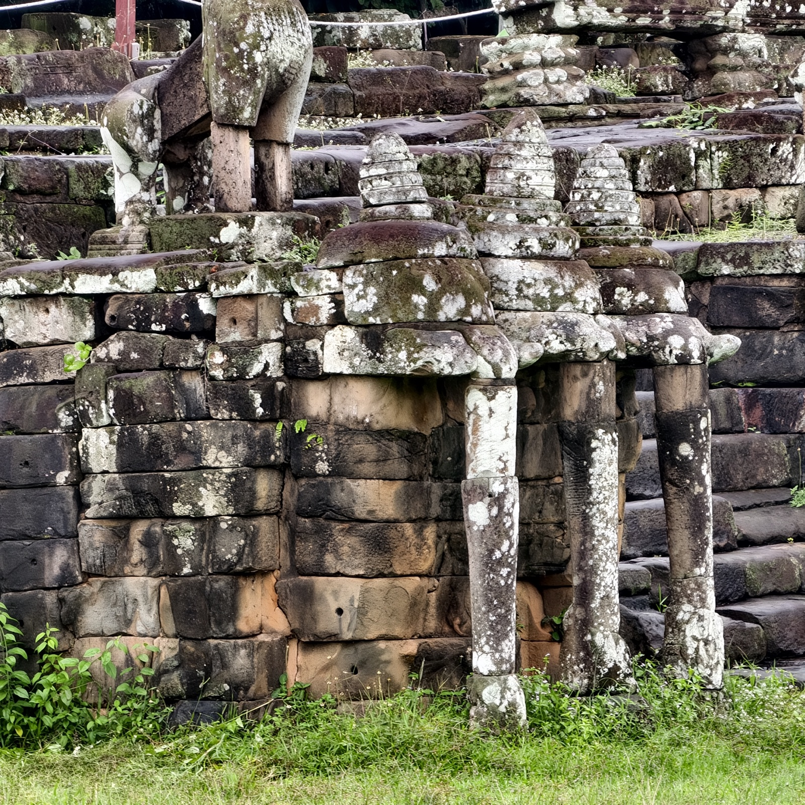
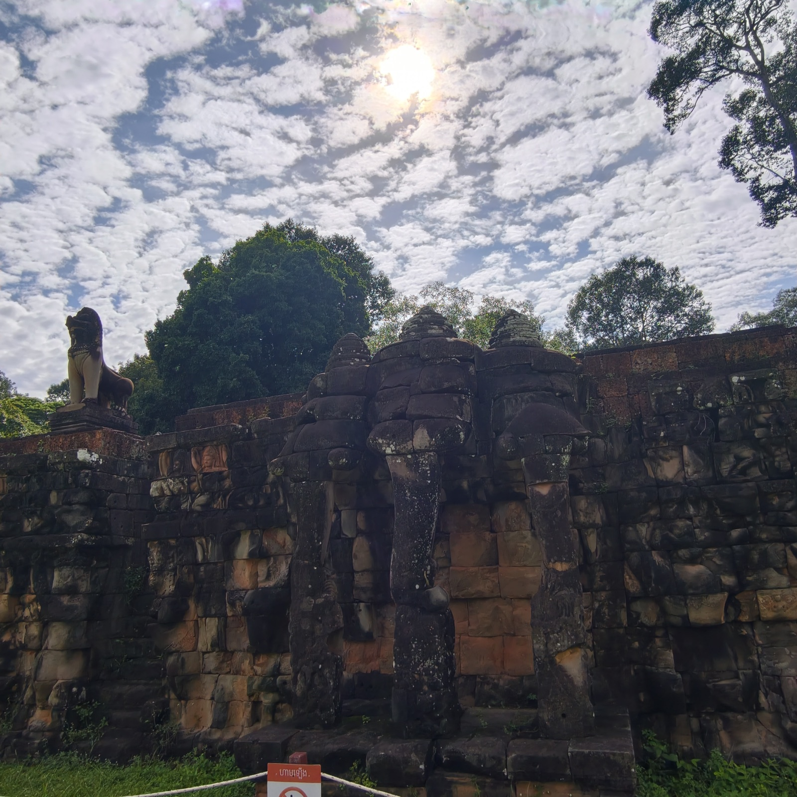
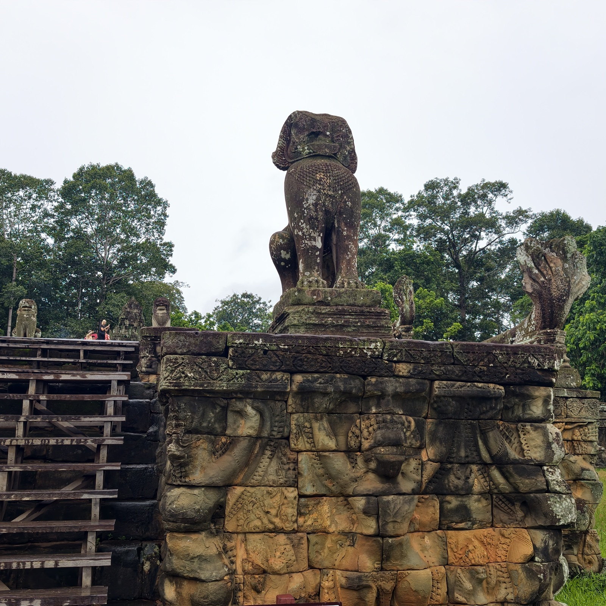
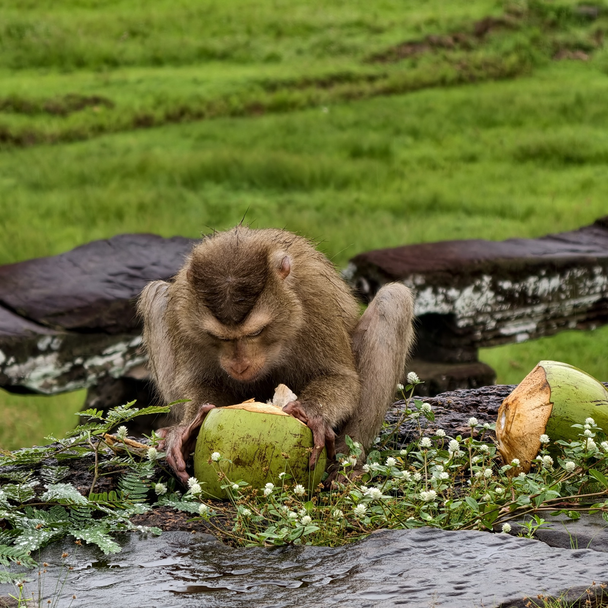
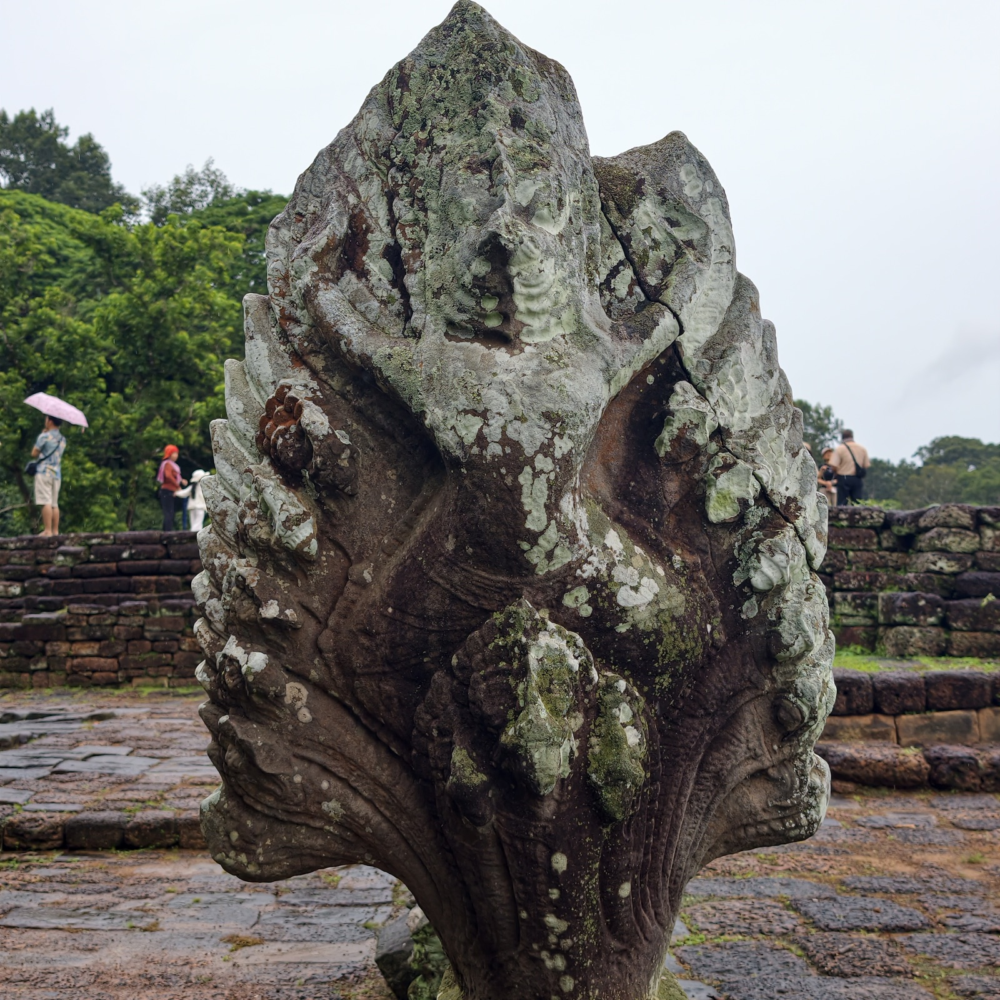
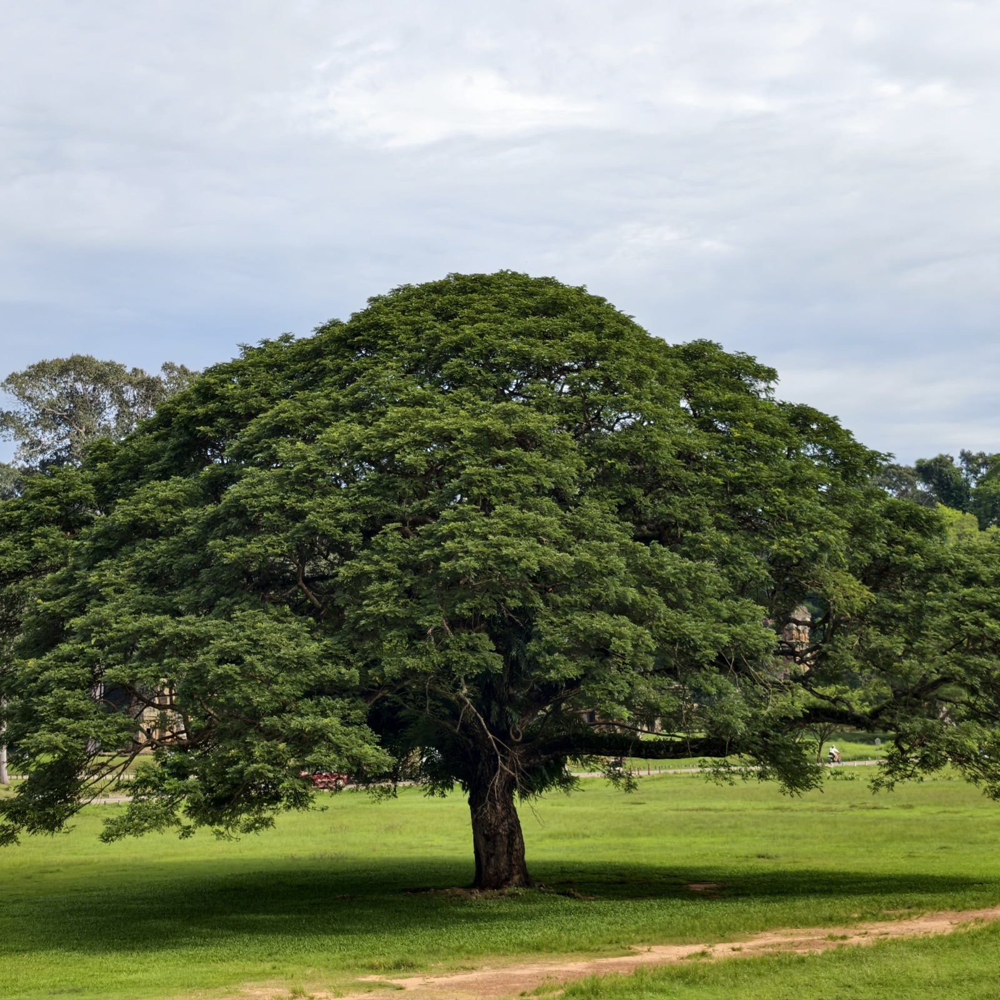
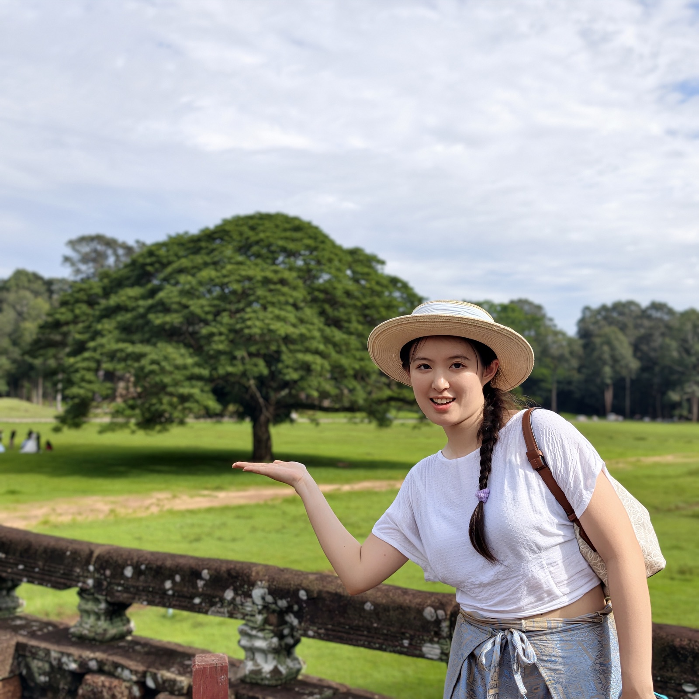

鬥象台
穿过古皇宫之后，就到了鬥象台。陈老师说，这里是古代阅兵的地方。


这条长达三百五十米的平台，就在大吴哥城的南北向皇家大道上，南接巴方寺，北邻癞王台，是古皇宫正前方的皇家阅兵台。当年台上可能筑有木结构的楼阁，为观赏表演的皇室成员提供遮荫，如今只剩下砂岩砌成的台基。历代吴哥国王就坐在鬥象台上，迎接凯旋而归的军队由胜利门进城，眼前战象一字排开，将士神气威武——那般军容壮盛、举国欢腾的景象，至今仍能从鬥象台的浮雕里窥见一二。（十二世纪末 · 巴戎寺式 · 阇耶跋摩七世）



那伽与金翅鸟是同父异母的兄弟：那伽是蛇，金翅鸟是老鹰。他们的母亲是一对姐妹，都是仙人迦叶波的妻子。有一天，姐妹俩看着太阳神驾着马车从远方的海平面升起，两人为马尾巴的颜色起了争执——那迦的母亲说马尾是黑的，金翅鸟的母亲说是白的，姐妹俩为此打赌，输家要当赢家的奴婢。那迦的母亲叫她的儿子们爬上马尾，把白色的尾巴缠住，远远看去就像是黑的；金翅鸟的母亲不知有诈，从此成了那迦母亲的奴隶。知道真相的金翅鸟要求那迦释放母亲，那迦却要他把甘露取来交换。甘露是众神搅拌乳海得到的不死药，极为珍贵，金翅鸟为救母亲，只好到天界去盗取。甘露得手后，他在回程路上遇到毗湿奴，双方为甘露大打出手，却因势均力敌分不出胜负。毗湿奴敬佩他一身神力、孝心感人，答应把甘露暂时借给他；金翅鸟也从此臣服于毗湿奴，愿意做他的坐骑作为报答。
带着甘露回来的金翅鸟去找那迦，先把甘露放在一旁，骗那迦说喝甘露前必须先沐浴净身才会灵验。那迦不疑有他，乖乖去洗澡，金翅鸟便带着母亲和甘露溜之大吉。那迦回来找不到甘露，虽生气，仍抱着一线希望拼命舔草地，想舔到一两滴不小心洒落的甘露，舌头却被锋利的草叶割伤——从此，蛇的信子就裂成了两半。这件事之后，鹰与蛇族誓不两立：蛇总溜进鹰巢偷蛋吃，鹰一见到蛇就发动攻击。所以在吴哥古迹中，金翅鸟与那迦搏斗的图像相当常见。
最后补充一段：鬥象台正对着一片很大的草坪和广场，广场中央有棵大树，非常漂亮，很有能量和生命力。晴天再次逛大圈的时候，看到有些人在这里拍婚纱照。


这可能就是古代国王阅兵时看到的景色吧。突突车司机——一个柬埔寨人——用英语跟我们说：以前是给国王看的，现在我们也可以看了。
广场对面有十二座塔。传说犯了错的十二生肖之人要在塔里忏悔，三天三夜不吃不喝，如果没事，就可以被宽恕。